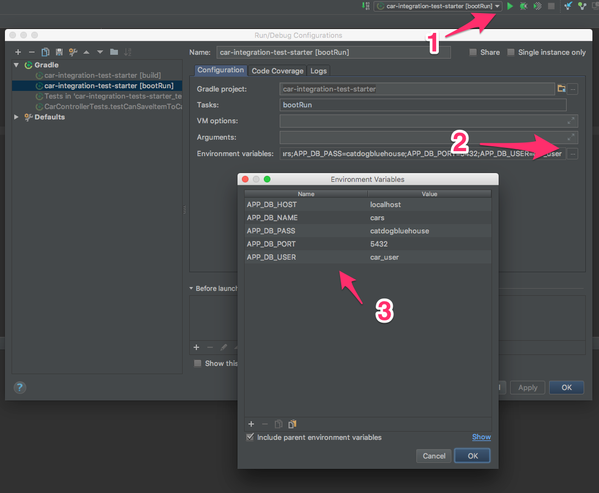

Walkthrough: Cars Demo - Spring Data, JPA, Hibernate
In this walkthrough, we revisit the Car Integration Tests that we worked on in yesterday’s walkthrough Walkthrough: Spring Integration Tests. We’ll refactor the app to use Postgres and Hiberante.
Setup
- In the terminal go to project folder for Car Integration Tests
- Checkout the branch that contains the solution for the Day 3 walkthrough. Example:
$ git checkout master or $git checkout solution
- Create a new branch for today’s work:
$ get checkout -b day4-add-hibernate
Our Tasks
Each section outlines one task or group of tasks we need to complete.
Set Up A Postgres DB
- From
psql, create a Postgres user: psql=# create user car_user with encrypted password 'catdogbluehouse';
- Create a database:
psql=# create database car;
- Grant the user access to the database:
psql=# grant all privileges on database car to car_user
Intellij Run Configurations
We will use Run Configurations to set the Environment Variables.

Update Gradle Dependencies
Add the associated Postgres dependency to build.gradle as a compile-time dependency.
Set the existing h2 dependency to be a testCompile dependency, since it will only be needed for running tests at this point.:
dependencies {
runtime('org.springframework.boot:spring-boot-devtools')
compile('org.springframework.boot:spring-boot-starter-data-jpa')
compile('org.springframework.boot:spring-boot-starter-thymeleaf')
compile('org.springframework.boot:spring-boot-starter-web')
compile(group: 'org.postgresql', name: 'postgresql', version: '42.1.4')
testCompile('com.h2database:h2')
testCompile('org.springframework.boot:spring-boot-starter-test')
}
Add Annotations to Car Model
package org.launchcode.training.models;
import javax.persistence.Entity;
import javax.persistence.GeneratedValue;
import javax.persistence.GenerationType;
import javax.persistence.Id;
@Entity
public class Car {
@Id
@GeneratedValue(strategy= GenerationType.IDENTITY)
private int id;
//rest of class is not shown...
Add CarRepository
package org.launchcode.training.data;
import org.launchcode.training.models.Car;
import org.springframework.data.jpa.repository.JpaRepository;
import org.springframework.stereotype.Repository;
@Repository
public interface CarRepository extends JpaRepository<Car, Integer> {
}
Autowire Repositories into Controllers
@Controller
@RequestMapping("car")
public class CarController {
@Autowired
private org.launchcode.training.data.CarRepository carRepository;
Autowire Repositories in Tests
@RunWith(SpringRunner.class)
@IntegrationTestConfig
public class CarControllerTests {
@Autowired
private MockMvc mockMvc;
@Autowired
private CarRepository carRepository;
Do the Tests Pass?
If not, fix them ;p